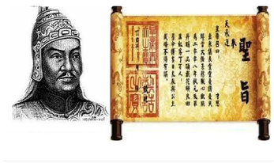

Ban lãnh đạo nhà trường
Hiệu trưởng và các phó hiệu trưởng
Hiệu Trưởng:Nguyền Hải Sơn
Phó hiệu trưởng: Nguyễn Thị Thanh Hà
Phó Hiệu Trưởng: Nguyễn Thị Hoa Chi

Tiểu sử danh nhân Ngô Thị Nhậm
Ngô thì nhậm thông minh, học giỏi, sớm có những công trình về lịch sử. Ngô thì Nhậm xuất thân gia đình vọng tộc chốn Bắc Hà, là con Ngô Thì Sĩ, người làng Tả Thanh Oai, ngày nay thuộc huyện Thanh Trì Hà Nội. Nhờ truyền thống gia đình văn học và nhờ tư chất thông minh, Ngô Thì Nhậm thành công rất sớm......

Lịch sử trường THPT Ngô Thì Nhậm
Ngày 10 tháng 10 năm 1977, giữa lúc Thủ Đô hân hoan kỉ niệm 23 năm Giải phóng thì ở miền quê ngoại thành giàu truyền thống cách mạng, truyền thống hiếu học, quê hương của nhà giáo đạo cao đức trọng Chu Văn An, đã ra đời một ngôi trường mới: Trường vừa học và vừa làm Thanh Trì, tiền thân của trường Ngô Thì Nhậm.......